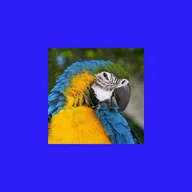

Solid Matte

Naglalagay ng solid na kulay sa likod ng layer, pinupuno ang mga transparent na bahagi nito. Ipinapakita lang ng Punch Out ang kulay na may butas na hugis ng layer, at pinupuno ng Screen Space ang buong screen sa halip na ang kahon ng layer.
Mga Setting
| Setting | Uri | Saklaw | Default |
|---|---|---|---|
| Kulay | Kulay | – | #2D1EF6 |
| Alpha | Numero | 0% hanggang 100% | 100% |
| Punch Out | Naka-on o naka-off | – | Naka-off |
| Screen Space | Naka-on o naka-off | – | Naka-off |